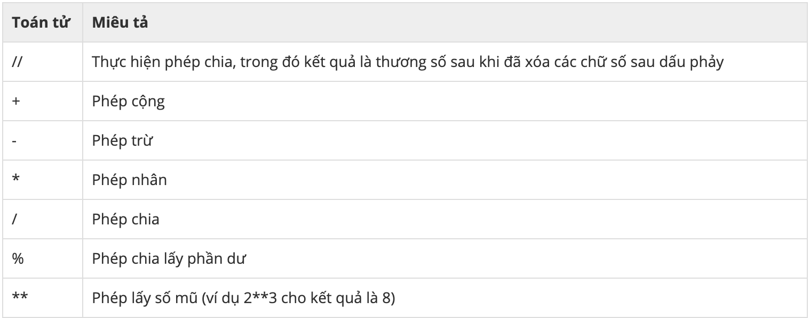

Khóa học python cơ bản
Chương 2. Kiểu dữ liệu - Phép toán - Nhập xuất dữ liệu
1. Biến Trong Python
BIẾN LÀ GÌ?
Nếu bạn từng làm các bài toán đại số thì các bạn luôn phải chạm mặt các biến như là biến x, biến y, biến a, biến b,… Và như bạn thấy nó chả có giá trị cụ thể.
Trong lập trình, biến(variable) là tên của một vùng trong bộ nhớ RAM, được sử dụng để lưu trữ thông tin. Bạn có thể gán thông tin cho một biến, và có thể lấy thông tin đó ra để sử dụng. Khi một biến được khai báo, một vùng trong bộ nhớ sẽ dành cho các biến.
Biến là một thứ cực kì quan trọng trong lập trình mà không thể thiếu trong bất cứ chương trình lớn, nhỏ nào.
TẠI SAO PHẢI DÙNG BIẾN?
Biến giúp chúng ta lưu trữ các dữ liệu và cho phép chúng ta lấy các dữ liệu của chúng để tính toán được thuận tiện và chính xác hơn. Hãy tưởng tượng như sau, bạn có một số dữ liệu là những con số với nhiều chữ số và các thao tác tính toán (cộng 2 số): 123456789 + 987654321 = 1111111110 (rồi lại tiếp tục cộng) 123456789 + 123123123 = 246579912. Một điều mà các bạn dễ dàng nhận ra đó là những con số với nhiều chữ số gây khó khăn trong việc sử dụng vì chúng có quá nhiều chữ số, đôi lúc chúng ta cũng có thể vô tình gây sai lệnh giá trị.
Ta hãy giải quyết bài toán trên khi nhờ tới sự giúp đỡ của các biến.
Ví dụ:
x = 123456789 y = 987654321 z = 123123123 sum1 = x + y sum2 = x + z
Kết quả của sum1 = 1111111110 và sum2 = 246579912.
Dễ thấy, ta cũng được kết quả tương tự, nhưng lại dễ dàng tính toán, giảm thiểu tỉ lệ sai lệnh giá trị hơn khi không sử dụng tới biến.
NHỮNG THỨ CẦN BIẾT VỀ TÊN BIẾN
- Tên của biến không được bắt đầu bằng số.
- Tên biến không được trùng với các từ khóa của Python.
- Tên của biến chỉ chứa các chữ cái, số và ‘_’.
- Tên biến trong Python có phân biệt chữ in hoa và in thường. Ví dụ: PI, Pi, pI, pi là 4 tên biến khác nhau.
KHỞI TẠO BIẾN TRONG PYTHON.
CÚ PHÁP
Khai báo một biến:
<tên biến> = <giá trị>
Khai báo nhiều biến:
a, b ,c ,d = 30, 9, 20, 0 /*Tương ứng với*/ a = 30 b = 9 c = 20 d = 0 a, b, c, d = 2000 /*Tương ứng với*/ a = 2000 b = 2000 c = 2000 d = 2000
Nếu bạn vẫn chưa hình dung ra được thì có thể xem đoạn video dưới đấy sẽ làm rõ hơn về cách sử dụng và đặt tến biến sao cho đúng.
2. Một số kiểu dữ liệu cơ bản trong Python
SỐ NGUYÊN
Số nguyên bao gồm các số nguyên dương (1, 2, 3, ..), các số nguyên âm (-1, -2, -3) và số 0. Trong Python, kiểu dữ liệu số nguyên cũng không có gì khác biệt.
Ví dụ: 113, -114, ...
Ví dụ: Gán giá trị cho một biến a là 4 và xuất ra kiểu dữ liệu của a.
x = 4 print(x)
Kết quả sau khi in ra màn hình là 4. Ta chưa cần chú ý đến lệnh print(x) vội ta chỉ cần hiểu đơn giản là in ra màn hình và sẽ nó sẽ được nói kĩ trong phần tiếp theo.
Một điểm đáng chú ý trong Python 3.X đó là kiểu dữ liệu số nguyên là vô hạn. Điều này cho phép bạn tính toán với những số cực kì lớn, điều mà đa số các ngôn ngữ lập trình khác KHÔNG THỂ.
SỐ THỰC
Về kiểu dữ liệu số thực, thì đây là tập hợp các số nguyên và số thập phân 1, 1.4, -123, 69.96, ...
Lưu ý : Thường khi chúng ta viết số thực, phần nguyên và phần thập phân được tách nhau bởi dấu phẩy ( , ). Thế nhưng trong Python, dấu phẩy ( , ) này được thay thế thành dấu chấm ( . ).
Số thực trong Python có độ chính xác xấp xỉ 15 chữ số phần thập phân.
Ví dụ: Số thực 10/3.
x = 10/3 print(x)
Kết quả khi in ra màn hình sẽ là: 3.3333333333333335.
CHUỖI(STRING).
CHUỖI LÀ GI?
Trong Python, chuỗi là những thứ được đặt trong cặp dấu ‘ ’, hoặc “ ”, có thể cũng là trong cặp ‘’’ ‘’’, “”” “””. Nhưng cơ bản và thường đường sử dụng nhất là cặp ‘ ‘ và “ “.
string1 = 'Say Hi' /*gán biến string1 với giá trị chuỗi với giá trị là 'Say Hi'*/ string2 = "Say Hello" /*gán biến string2 với giá trị chuỗi với giá trị là "Say Hello"*/
SỰ KHÁC NHAU GIỮA '' VÀ "".
Thường khi nhắc đến chuỗi, ta hay nghĩ tới một dòng. Và khi đó, ta sử dụng cặp dấu ‘ ’ hoặc “ ”. Nếu là nhiều dòng chuỗi kết nối với nhau, như những câu chữ bạn hay viết trong những cuốn vở thì đó cũng là một chuỗi, nhưng chuỗi đó sẽ được đặt trong cặp dấu ‘’’ và “””.
Còn có thêm một số kiểu dữ liệu khác như: phân số, số phức,... Vì chúng ta đang học những thứ cơ bản nên chưa bận tâm đến những kiểu dữ liệu này.
3. Các phép toán cơ bản trong Python
PHÉP TOÁN SỐ HỌC
Cũng giống như các ngôn ngữ lập trình khác, Python sử dụng các phép cộng, trừ, nhân, chia với các số. Chúng ta thử ví dụ sau:
10 + 3 >>> 13 10 - 3 >>> 7 10 * 3 >>> 30 10 / 3 >>> 3 10 % 3 >>>1 2**4 >>>16
Dưới đây là bảng toán tử số học trong Python:
PHÉP TOÁN VỚI CHUỖI(STRING) TRONG PYTHON.
Python hỗ trợ việc nối các chuỗi bằng dấu cộng (+). Chúng ta hãy xem ví dụ này:
str = "Say" + "_" + "Hi" >>> Say_Hi
Còn một số phép toán khác như: Sử dụng phép toán với danh sách (list), ... Ta sẽ tạm thời chưa nhắc đến ở đây.
4. Xuất dữ liệu.
VÌ SAO CẦN HÀM PRINT()?
Nếu bạn hay dùng interactive prompt thì bạn nhân ra rằng, kết quả luôn xuất hiện sau mỗi dòng code của bạn. Tuy nhiên, nó sẽ không như vậy khi bạn viết những dòng code vào trong một file Python và chạy chương trình đó.
Bạn cần một hàm giúp bạn xuất các nội dung mà bạn muốn cụ thể ở đây là xuất ra Shell (terminal, command prompt, powershell,…). Đó là lí do hàm print ra đời!
CÚ PHÁP.
print(*objects, sep=' ', end='\n', file=sys.stdout, flush=False)
Ví dụ:
print("Hello World") print(100)
Trên màn hình terminal sẽ hiển thị "Hello World" và "1".
5. Nhập dữ liệu.
VÌ SAO CẦN HÀM INPUT()?
Có một ví dụ đơn giản khi ta viết một đoạn code:
chao = "Say Hi" print(chao)
Nhưng bây giờ ta muốn chào kiểu khác như Hello thì nếu như vẫn giữ nguyên đoạn code trên thì nó chỉ có thể mãi mãi là Say Hi vậy nên chúng ta cần dùng lệnh input().
CÚ PHÁP.
<tên biến> = input()
Ví dụ:
chao = input() print(chao)
Giả sử nếu ta nhập vào là hello thì trên màn hình terminal sẽ hiển thị "hello".
6. Một số bài tập.
Bài tập trắc nghiệm
Bài 1. Đâu là cách đặt tiến biến đúng?
A. Best*Yasou.
B. Best_Yasou.
C. Best Yasou.
Bài 2. Đâu là kiểu dữ liệu string?
A. 123.
B. '1'.
C. "123".
Bài 3. Đâu là hàm nhập và hàm xuất?
A. input() và print().
B. print() và input().
C. input() và output().
Kết quả: Bài1.B , Bài2.C , Bài3.A .
Bài tập thực hành
Bài 1. Viết lên chương trình tính tổng 2 số và tìm hiệu 2 số.
Bài 2. Viết lên chương trình tính diện tích hình chữ nhật với 2 cạnh a b bất kì nhập vào từ bản phím .
Bài 3. Viết lên chương trình in ra và lặp lại một chuỗi bất kì S nhập vào từ bàn phím 3 lần nhưng chỉ được sử dụng 1 lần hàm print().